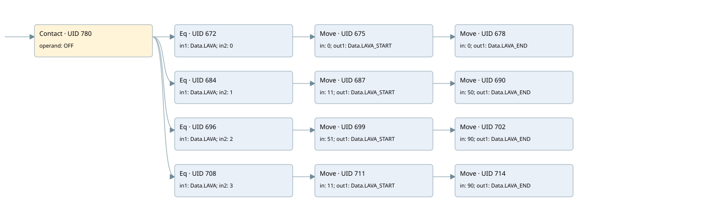

filter
filter · 검색 색인 순서 8 · 원본 내부 NID 추정 7
백업 PLF 원본의 2730331 바이트 위치에서 복원한 XML. 검색 문서 1889의 객체 키 161022003011000000000000와 연결했다. 이름 해석 25/25개. 남은 RefId는 상수 또는 미해석 참조다.
연결 구조 다시 그리기
원본 Part/PCon/Wire를 이용한 연결도다. TIA 화면의 래더 배치 또는 실행 결과를 재현한 그림은 아니다. 핀 연결은 아래 표와 원본 XML을 기준으로 읽는다. 노드 위에 마우스를 두면 피연산자 이름을 볼 수 있다.

접점·코일·블록과 피연산자
| Part UID | Gate | Negated 핀 | 연결 피연산자 |
|---|---|---|---|
| 780 | Contact | operand = OFF | |
| 672 | Eq | in1 = Data.LAVA; in2 = 0 | |
| 675 | Move | in = 0; out1 = Data.LAVA_START | |
| 678 | Move | in = 0; out1 = Data.LAVA_END | |
| 684 | Eq | in1 = Data.LAVA; in2 = 1 | |
| 687 | Move | in = 11; out1 = Data.LAVA_START | |
| 690 | Move | in = 50; out1 = Data.LAVA_END | |
| 696 | Eq | in1 = Data.LAVA; in2 = 2 | |
| 699 | Move | in = 51; out1 = Data.LAVA_START | |
| 702 | Move | in = 90; out1 = Data.LAVA_END | |
| 708 | Eq | in1 = Data.LAVA; in2 = 3 | |
| 711 | Move | in = 11; out1 = Data.LAVA_START | |
| 714 | Move | in = 90; out1 = Data.LAVA_END |
접점 경로를 펼친 조건식
Contact·O/A·비교기의 원본 연결을 읽기 쉽게 펼친 보조 해석이다. POWER는 전원 레일 시작을 뜻한다. 호출 블록·에지·타이머의 내부 동작과 다중 쓰기 순서는 이 표로 실행 검증하지 않았다. 미해석 핀과 RefId는 원문 연결표에서 확인한다.
| UID | 동작 | 대상 | 원본 접점 경로 | 내용 |
|---|---|---|---|---|
| 675 | Move | Data.LAVA_START | (OFF AND [Data.LAVA = 0]) | Move 입력 0 |
| 678 | Move | Data.LAVA_END | Move UID 675.eno (블록 동작 확인) | Move 입력 0 |
| 687 | Move | Data.LAVA_START | (OFF AND [Data.LAVA = 1]) | Move 입력 11 |
| 690 | Move | Data.LAVA_END | Move UID 687.eno (블록 동작 확인) | Move 입력 50 |
| 699 | Move | Data.LAVA_START | (OFF AND [Data.LAVA = 2]) | Move 입력 51 |
| 702 | Move | Data.LAVA_END | Move UID 699.eno (블록 동작 확인) | Move 입력 90 |
| 711 | Move | Data.LAVA_START | (OFF AND [Data.LAVA = 3]) | Move 입력 11 |
| 714 | Move | Data.LAVA_END | Move UID 711.eno (블록 동작 확인) | Move 입력 90 |
원본 배선 연결
| Wire UID | 동일 Wire 연결 끝점 |
|---|---|
| 782 | Powerrail {} ↔ Part 780.in |
| 742 | ORef 717 (OFF) ↔ Part 780.operand |
| 781 | Part 780.out ↔ Part 672.pre ↔ Part 684.pre ↔ Part 696.pre ↔ Part 708.pre |
| 743 | ORef 718 (Data.LAVA) ↔ Part 672.in1 |
| 744 | ORef 719 (0) ↔ Part 672.in2 |
| 745 | Part 672.out ↔ Part 675.en |
| 747 | ORef 720 (0) ↔ Part 675.in |
| 749 | Part 675.eno ↔ Part 678.en |
| 748 | Part 675.out1 ↔ ORef 721 (Data.LAVA_START) |
| 750 | ORef 722 (0) ↔ Part 678.in |
| 751 | Part 678.out1 ↔ ORef 723 (Data.LAVA_END) |
| 752 | ORef 724 (Data.LAVA) ↔ Part 684.in1 |
| 753 | ORef 725 (1) ↔ Part 684.in2 |
| 754 | Part 684.out ↔ Part 687.en |
| 756 | ORef 726 (11) ↔ Part 687.in |
| 758 | Part 687.eno ↔ Part 690.en |
| 757 | Part 687.out1 ↔ ORef 727 (Data.LAVA_START) |
| 759 | ORef 728 (50) ↔ Part 690.in |
| 760 | Part 690.out1 ↔ ORef 729 (Data.LAVA_END) |
| 761 | ORef 730 (Data.LAVA) ↔ Part 696.in1 |
| 762 | ORef 731 (2) ↔ Part 696.in2 |
| 763 | Part 696.out ↔ Part 699.en |
| 765 | ORef 732 (51) ↔ Part 699.in |
| 767 | Part 699.eno ↔ Part 702.en |
| 766 | Part 699.out1 ↔ ORef 733 (Data.LAVA_START) |
| 768 | ORef 734 (90) ↔ Part 702.in |
| 769 | Part 702.out1 ↔ ORef 735 (Data.LAVA_END) |
| 770 | ORef 736 (Data.LAVA) ↔ Part 708.in1 |
| 771 | ORef 737 (3) ↔ Part 708.in2 |
| 772 | Part 708.out ↔ Part 711.en |
| 774 | ORef 738 (11) ↔ Part 711.in |
| 776 | Part 711.eno ↔ Part 714.en |
| 775 | Part 711.out1 ↔ ORef 739 (Data.LAVA_START) |
| 777 | ORef 740 (90) ↔ Part 714.in |
| 778 | Part 714.out1 ↔ ORef 741 (Data.LAVA_END) |
식별자 해석 근거 25개
| ORef UID | RefId | 이름 | IdentXmlPart 파일 | 해석 방법 |
|---|---|---|---|---|
| 717 | 1 | OFF | 0594-IdentXmlPart.xml | UID/RID + search-text + NID agreement |
| 718 | 68 | Data.LAVA | 0596-IdentXmlPart.xml | UID/RID + search-text + NID agreement |
| 719 | 67 | 0 | 0597-IdentXmlPart.xml | literal candidate: UID/RID/NID + nearby named declarations + search-text agreement |
| 720 | 67 | 0 | 0597-IdentXmlPart.xml | literal candidate: UID/RID/NID + nearby named declarations + search-text agreement |
| 721 | 76 | Data.LAVA_START | 0596-IdentXmlPart.xml | UID/RID + search-text + NID agreement |
| 722 | 67 | 0 | 0597-IdentXmlPart.xml | literal candidate: UID/RID/NID + nearby named declarations + search-text agreement |
| 723 | 78 | Data.LAVA_END | 0596-IdentXmlPart.xml | UID/RID + search-text + NID agreement |
| 724 | 68 | Data.LAVA | 0596-IdentXmlPart.xml | UID/RID + search-text + NID agreement |
| 725 | 70 | 1 | 0597-IdentXmlPart.xml | literal candidate: UID/RID/NID + nearby named declarations + search-text agreement |
| 726 | 80 | 11 | 0597-IdentXmlPart.xml | literal candidate: UID/RID/NID + nearby named declarations + search-text agreement |
| 727 | 76 | Data.LAVA_START | 0596-IdentXmlPart.xml | UID/RID + search-text + NID agreement |
| 728 | 30 | 50 | 0597-IdentXmlPart.xml | literal candidate: UID/RID/NID + nearby named declarations + search-text agreement |
| 729 | 78 | Data.LAVA_END | 0596-IdentXmlPart.xml | UID/RID + search-text + NID agreement |
| 730 | 68 | Data.LAVA | 0596-IdentXmlPart.xml | UID/RID + search-text + NID agreement |
| 731 | 72 | 2 | 0597-IdentXmlPart.xml | literal candidate: UID/RID/NID + nearby named declarations + search-text agreement |
| 732 | 4 | 51 | 0597-IdentXmlPart.xml | literal candidate: UID/RID/NID + nearby named declarations + search-text agreement |
| 733 | 76 | Data.LAVA_START | 0596-IdentXmlPart.xml | UID/RID + search-text + NID agreement |
| 734 | 84 | 90 | 0597-IdentXmlPart.xml | literal candidate: UID/RID/NID + nearby named declarations + search-text agreement |
| 735 | 78 | Data.LAVA_END | 0596-IdentXmlPart.xml | UID/RID + search-text + NID agreement |
| 736 | 68 | Data.LAVA | 0596-IdentXmlPart.xml | UID/RID + search-text + NID agreement |
| 737 | 74 | 3 | 0597-IdentXmlPart.xml | literal candidate: UID/RID/NID + nearby named declarations + search-text agreement |
| 738 | 80 | 11 | 0597-IdentXmlPart.xml | literal candidate: UID/RID/NID + nearby named declarations + search-text agreement |
| 739 | 76 | Data.LAVA_START | 0596-IdentXmlPart.xml | UID/RID + search-text + NID agreement |
| 740 | 84 | 90 | 0597-IdentXmlPart.xml | literal candidate: UID/RID/NID + nearby named declarations + search-text agreement |
| 741 | 78 | Data.LAVA_END | 0596-IdentXmlPart.xml | UID/RID + search-text + NID agreement |
검색 코드 보조 자료
참조 명칭을 찾기 위한 자료이며 실행 순서나 AND/OR 관계는 위 연결표로 확인한다.
"off" "data".lava 0 move 0 move 0 "data".lava 1 move 11 move 50 "data".lava_start "data".lava_end "data".lava 2 move 51 move 90 "data".lava_start "data".lava_end "data".lava 3 move 11 move 90 "data".lava_start "data".lava_end "data".lava_start "data".lava_end